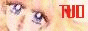
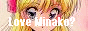
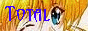

Asylum » Exit
So you wanna link TVD? Please choose one of the following buttons to put on your website if you like. If you have won one of my awards, then I'll be looking for one of my buttons or a text link when I go there. Just right click and save as to save the buttons, and remember to link them to http://venus.ainoyume.net. Thank you for your support!
Still Buttons:
Animated Buttons:



» Links Out
Most of these links are definitely worth checking out. These are my recommendations on good venus sites. Others vary from ordinary sites to some of the best on the net. But either way, check them out! None of these should be broken, unless otherwise notified. If unnotified ones are broken, please inform me.
Venus Shrines:
Beam of the Love Senshi
Look Out Venus
Sailor-V HQ
Shrines to other Senshi:
Serapii-Kisu (Tsukino Usagi)
Innocence (Mizuno Ami)
Fire Senshi's Realm (Hino Rei)
Sky Coloured Oceans (Haruka x Michiru)
Sea Sky, Wind Water (Haruka x Michiru)
General BSSM Sites:
The Oracle
|